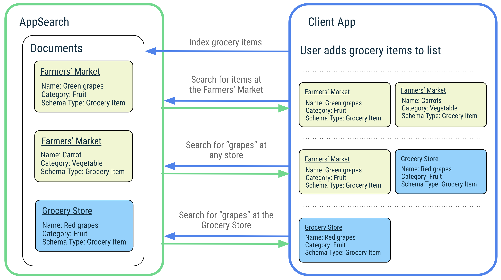
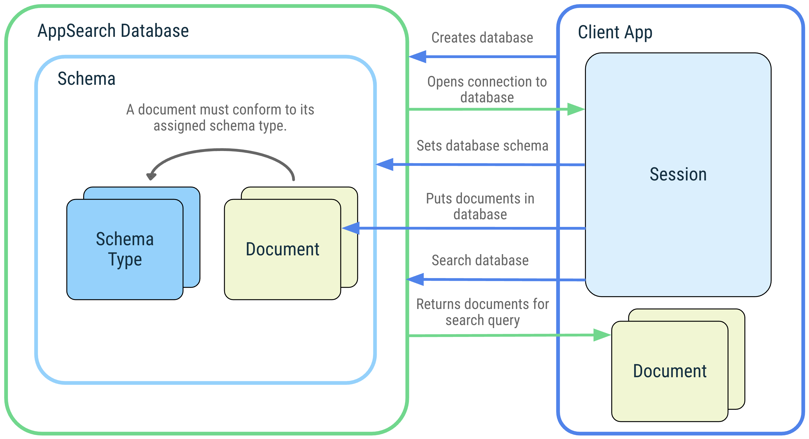

AppSearch in Android 12
Workflow：
- 熟悉并使用 AppSearch 功能
- 梳理 API 调用并分析攻击面
- 阅读源码和动态调试（可能存在的 native 实现）
Research Question：
- 创建会话、插入数据是否有上限，能否造成 DoS？
- 查询数据能否突破应用内存储限制，达成 EoP？
Introduction
AppSearch 是一个搜索库，用于管理本地结构化数据；支持通过索引写入数据和通过全文本搜索（full-text search）来读取数据；Apps 可以使用 AppSearch 来实现应用内搜索功能且支持离线查找。
AppSearch 主要特点：
- 快速且低 I/O 使用的移动端存储实现
- 在大型数据集上高效索引和查询
- 多语言支持（英语、西班牙语等）
- 相关性排名（ranking）和使用评分（score）
和 SQLite 相比，AppSearch 索引和查询数据的延迟（latency）更低，且简化了跨类型（cross-type）查询。
AppSearch concepts
-
Database and session
一个 AppSearch 数据库是一些满足该数据库结构（database schema）的 documents 的集合，client app 提供应用上下文（application context）和数据库名（database name）即可创建一个 AppSearch 数据库，该数据库只能被创建它的应用打开。打开数据库时，AppSearch 返回一个与 client App 相连接的 session，这个 session 就是 client app 调用 AppSearch API 的入口点，直到 client app 关闭 session。 -
Schema and schema types
schema 表示一个 AppSearch 数据库中数据的组织结构，由代表着不同数据类型的 schema type 组成。一个 AppSearch 数据库只有设置了 schema type，属于这个 schema type 的 document 才能添加到数据库中。 -
Documents
一个 document 代表一个数据单元，一个 AppSearch 数据库中的每个 document 都被 namespace 和 ID 唯一标识。namespace 通常用来分开来自不同 source 的数据，如当查询来自 user accounts 的数据时。 -
Search
通过 query 可以查询满足特定条件的 documents。查询结果根据它们的 score 以及 ranking strategy 进行排序。
Platform Storage vs Local Storage
Local Storage：一个 App 管理一个应用特有的索引，这些索引存储在该应用的 data 目录。
Platform Storage：App 的数据用于构建系统级别的中央索引，数据访问具有严格的限制。每个 App 只能访问该应用的数据以及其他 App 中显式共享的数据。
| Features | LocalStorage (compatible with Android 4.0+) | PlatformStorage (compatible with Android 12+) |
|---|---|---|
| Efficient full-text search | T | T |
| Multi-language support | T | T |
| Reduced binary size | F | T |
| Application-to-application data sharing | F | T |
| Capability to display data on System UI surfaces | F | T |
| Unlimited document size and count can be indexed | T | F |
| Faster operations without additional binder latency | T | F |
Get Started with AppSearch
- 添加依赖：在 Application’s build.gradle 文件添加如下依赖：
（在 API 32 也就是 Android 13 中，AppSearch 作为内建库不再需要 implementation）
dependencies { |
- 实现一个 document 类
|
- 创建一个数据库
val context: Context = getApplicationContext() |
- 设置数据库的 schema
val setSchemaRequest = SetSchemaRequest.Builder().addDocumentClasses(Note::class.java) |
- 向数据库中插入 document
val note = Note( |
- 查找
val searchSpec = SearchSpec.Builder() |
AppSearch API
重点关注 PlatformStorage 数据访问控制：使用 PlatformStorage 时查询其他应用共享的数据，是否能够绕过授权查询不可访问的数据。
search |